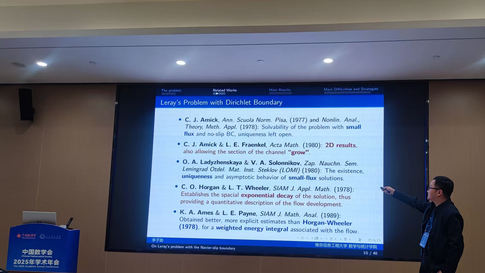

个人简介
南京信息工程大学数学与统计学院副教授、硕士生导师。2012 年和 2019 年先后在南京大学获得学士和博士学位，博士期间曾赴美国加州大学河滨分校联合培养两年。2023 至 2025 年在中国科学院数学与系统科学研究院从事博士后研究。我目前的研究聚焦于流体力学偏微分方程的初边值问题，尤其是滑移边界值相关问题。
研究方向
- 偏微分方程
- 流体力学中的数学问题
论文
已发表论文
2026
-
Global axisymmetric solution to the 3D incompressible inhomogeneous Navier–Stokes equations
Discrete Contin. Dyn. Syst. 54 (2026), 87–112. · MR5097163 · DOI 10.3934/dcds.2026028
-
Frontiers of Mathematics (2026). · DOI 10.1007/s11464-025-0144-7
-
On a one-component blow-up criterion for inhomogeneous axially symmetric Navier–Stokes equations
Math. Methods Appl. Sci. 49 (2026), no. 8, 8425–8435. · MR5074105 · DOI 10.1002/mma.70478
-
Remarks on regularity criteria for axisymmetric inhomogeneous Navier–Stokes equations
Calc. Var. Partial Differential Equations 65 (2026), no. 5, Paper No. 138, 21 pp. · MR5053918 · DOI 10.1007/s00526-026-03324-2
-
J. Differential Equations 461 (2026), Paper No. 114108, 21 pp. · MR5016702 · DOI 10.1016/j.jde.2026.114108
-
Global axisymmetric solution to the 3D incompressible anisotropic Navier–Stokes equations
J. Math. Pures Appl. (9) 205 (2026), Paper No. 103807, 37 pp. · MR4968086 · DOI 10.1016/j.matpur.2025.103807
2025
-
On local well-posedness of 3D ideal Hall-MHD system with an azimuthal magnetic field
Acta Math. Sin. (Engl. Ser.) 41 (2025), no. 12, 2921–2940. · MR5009561 · DOI 10.1007/s10114-025-4107-4
-
Calc. Var. Partial Differential Equations 64 (2025), no. 3, Paper No. 105, 33 pp. · MR4878968 · DOI 10.1007/s00526-025-02963-1
2024
-
On the lifespan of axisymmetric incompressible Euler equations with a small initial swirl
Z. Angew. Math. Phys. 75 (2024), no. 6, Paper No. 219, 11 pp. · MR4817743 · DOI 10.1007/s00033-024-02355-z
-
On Leray’s problem in an infinitely long pipe with the Navier-slip boundary condition
Sci. China Math. 67 (2024), no. 4, 819–854. · MR4721849 · DOI 10.1007/s11425-022-2129-y
-
Finite speed axially symmetric Navier–Stokes flows passing a cone
J. Funct. Anal. 286 (2024), no. 10, Paper No. 110393, 116 pp. · MR4717708 · DOI 10.1016/j.jfa.2024.110393
2023
-
On the large data global well-posedness of inviscid axially symmetric MHD-Boussinesq system
Acta Appl. Math. 187 (2023), Paper No. 15, 22 pp. · MR4649405 · DOI 10.1007/s10440-023-00608-z
-
J. Differential Equations 377 (2023), 221–270. · MR4642206 · DOI 10.1016/j.jde.2023.08.043
-
J. Differential Equations 374 (2023), 737–760. · MR4634937 · DOI 10.1016/j.jde.2023.08.011
-
Commun. Contemp. Math. 25 (2023), no. 5, Paper No. 2250013, 26 pp. · MR4579983 · DOI 10.1142/S0219199722500134
-
Z. Angew. Math. Phys. 74 (2023), no. 1, Paper No. 9, 19 pp. · MR4517279 · DOI 10.1007/s00033-022-01909-3
2022
-
On a single-component regularity criterion for the non-resistive axially symmetric Hall-MHD system
Acta Appl. Math. 181 (2022), Paper No. 1, 17 pp. · MR4470266 · DOI 10.1007/s10440-022-00519-5
-
One component regularity criteria for the axially symmetric MHD-Boussinesq system
Discrete Contin. Dyn. Syst. 42 (2022), no. 5, 2333–2353. · MR4405270 · DOI 10.3934/dcds.2021192
-
A single-component BKM-type regularity criterion for the inviscid axially symmetric Hall-MHD system
J. Math. Fluid Mech. 24 (2022), no. 1, Paper No. 16, 19 pp. · MR4365157 · DOI 10.1007/s00021-021-00651-6
-
Critical conditions on wθ imply the regularity of axially symmetric MHD-Boussinesq systems
J. Math. Anal. Appl. 505 (2022), no. 1, Paper No. 125451, 18 pp. · MR4283877 · DOI 10.1016/j.jmaa.2021.125451
2021
-
NoDEA Nonlinear Differential Equations Appl. 28 (2021), no. 2, Paper No. 12, 14 pp. · MR4210750 · DOI 10.1007/s00030-021-00674-y
2020
-
Liouville theorem of axially symmetric Navier–Stokes equations with growing velocity at infinity
Nonlinear Anal. Real World Appl. 56 (2020), 103159, 8 pp. · MR4101499 · DOI 10.1016/j.nonrwa.2020.103159
2019
-
On the vanishing of some D-solutions to the stationary magnetohydrodynamics system
J. Math. Fluid Mech. 21 (2019), no. 4, Paper No. 52, 13 pp. · MR4010662 · DOI 10.1007/s00021-019-0457-y
-
Some remarks on regularity criteria of axially symmetric Navier–Stokes equations
Commun. Pure Appl. Anal. 18 (2019), no. 3, 1333–1350. · MR3917709 · DOI 10.3934/cpaa.2019064
2018
-
Schauder estimates of the uniformly elliptic equation with a inverse-square potential
J. Math. Anal. Appl. 464 (2018), no. 2, 1352–1365. · MR3798662 · DOI 10.1016/j.jmaa.2018.04.064
2017
-
J. Differential Equations 263 (2017), no. 1, 57–87. · MR3631301 · DOI 10.1016/j.jde.2017.02.029
预印本
-
Refined critical flux bounds for Leray’s problem in a pipe with the Navier-slip boundary
-
A double-logarithmic lifespan bound for axisymmetric Euler equations with a small initial swirl
-
A wall-law approximation for Jeffery-Hamel flows in rough wedges
-
On the axisymmetric Navier–Stokes flow passing a cone with the total-slip boundary condition
科研项目
-
2021–2023
反平方位势与粘性不可压缩流体力学偏微分方程组的轴对称解
国家自然科学基金青年科学基金项目（C类） · 24 万元 · 已结题，主持
-
2020–2023
3维MHD-Boussinesq方程组经典解的整体正则性研究
江苏省基础研究计划 · 20 万元 · 已结题，主持
-
2024–2025
不可压缩Navier-Stokes方程组带滑移边界条件的管道轴对称解
中国博士后科学基金面上资助 · 8 万元 · 已结题，主持
学术报告
-
2026.10.08–2026.10.11
Axisymmetric Navier–Stokes flow passing a cone with the slip boundary condition
中国工业与应用数学学会第24届年会（CSIAM 2026） · 甘肃兰州

2026 年兰州报告现场 
2026 年兰州年会会场留影 -
2025.10.16–2025.10.20
On Leray’s problem with the Navier-slip boundary
中国数学会2025年学术年会 · 山东滨州

2025 年滨州报告现场 
2025 年滨州年会会场留影
课程教学
本科教学
- 复变函数与积分变换 II（2021–2026）
- 高等数学（2021–2023）
- 线性代数（2020–2021）
- 偏微分方程 II（全英文，2020）
- 微分方程（全英文，2019-2020）
研究生教学
- 非线性发展方程（2026）
- 非线性偏微分方程选讲（2020–2021）
- 非线性偏微分方程前沿讨论班（2021–2026）
- 微分方程（硕） · 国家研究生智慧教学平台课程（2022）
人才培养
已毕业硕士生
-
2021.09.01–2024.06.30
杨美鲜
学位论文：三维无磁阻抗的轴对称Hall-MHD系统解的正则性判别准则
-
2022.09.01–2025.06.30
邢照君
学位论文：三维轴对称MHD-Boussinesq系统解的适定性及粘性消失极限
-
2023.09.01–2026.06.30
周陶然
学位论文：几类不可压缩流体力学方程组解的生命跨度与唯一性研究
在读硕士生
-
2024.09.08 入学
杨林彬
预计 2027.06.30 毕业
-
2025.09.01 入学
吴志鹏
预计 2028.06.30 毕业
-
2026.09.01 入学
肖旭
预计 2029.06.30 毕业
教育经历
-
2008.09–2012.08
南京大学数学系 · 基础与应用数学 · 理学学士
-
2012.09–2019.03
南京大学数学系 · 理学博士
导师：尹会成教授
-
其间 2016.11–2018.11
美国加州大学河滨分校数学系 · 博士联合培养
导师：Qi S. Zhang 教授
工作经历
-
2019.03–至今
南京信息工程大学数学与统计学院 · 讲师–副教授
-
2023.11–2025.11
中国科学院数学与系统科学研究院 · 博士后
合作导师：张平院士
荣誉与职务
荣誉
- 南京市“中青年拔尖人才”（2024）
- 江苏省高校数学微课程教学竞赛三等奖（2020）
- 南京信息工程大学“优秀班主任”（2022）
职务与兼职
- 南京信息工程大学数学科学研究中心副主任（2026–至今）
- 美国数学会 MathSciNet 评论员（2017–至今）
- 德国数学会 zbMATH 评论员（2025–至今）
学术访问
-
2026.10–2026.11
英国巴斯大学数学科学系 · 访问学者
受 Tobias Barker 博士邀请访问。
-
2023.11–2023.12
韩国中央大学数学系 · 访问学者
受韩国科学院院士 Dongho Chae 教授邀请访问。
-
2015.11
美国加州大学河滨分校
受 Qi S. Zhang 教授邀请访问。
-
2014.12
新加坡国立大学 · 访问学者
受徐兴旺教授邀请访问。